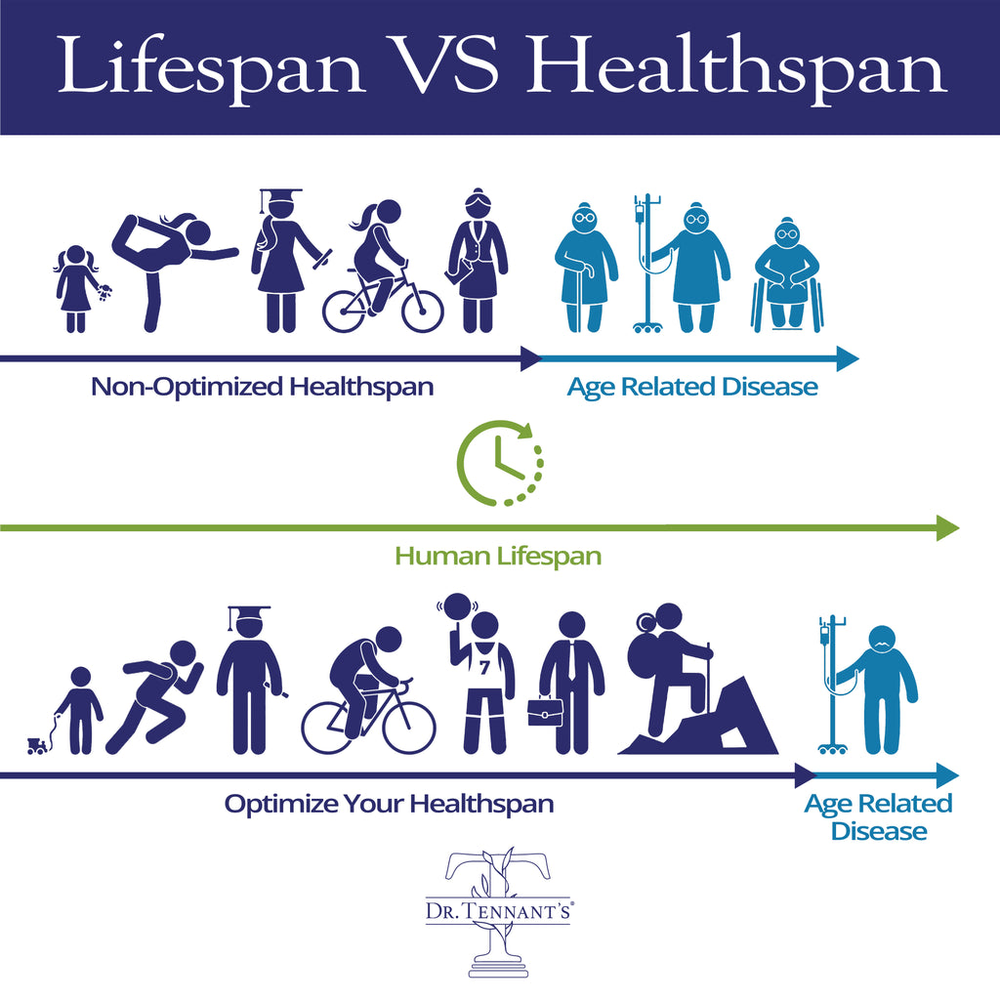

👉Bài dịch từ : https://tennantproducts.com/.../lifespan-vs-healthspan...
👉 Bài khá dài, hy vọng hữu duyên, ai đọc hết cho mình cánh tay nha.
"He who has great health has a thousand dreams; he who has bad health only has one." ~ Rolf Magener
[𝐍𝐠𝐮̛𝐨̛̀𝐢 𝐜𝐨́ 𝐬𝐮̛́𝐜 𝐤𝐡𝐨̉𝐞 𝐭𝐨̂́𝐭 𝐜𝐨́ 𝐡𝐚̀𝐧𝐠 𝐧𝐠𝐚̀𝐧 𝐮̛𝐨̛́𝐜 𝐦𝐨̛; 𝐧𝐠𝐮̛𝐨̛̀𝐢 𝐜𝐨́ 𝐬𝐮̛́𝐜 𝐤𝐡𝐨̉𝐞 𝐤𝐞́𝐦 𝐜𝐡𝐢̉ 𝐜𝐨́ 𝐦𝐨̣̂𝐭. ]
Bạn đã bao giờ tự hỏi sự khác biệt giữa tuổi thọ và thời gian sống khỏe mạnh chưa? Ai trong chúng ta cũng mong muốn sống lâu, nhưng liệu bạn có muốn sống những năm tháng đó một cách trọn vẹn, không bị ràng buộc bởi bệnh tật mãn tính hay những hạn chế sức khỏe? Đó chính là lúc khái niệm "thời gian sống khỏe mạnh" (healthspan) xuất hiện.
Trong bài viết này, chúng ta sẽ khám phá khái niệm healthspan và cách nó có thể thay đổi cuộc sống của bạn. Hãy sẵn sàng truyền cảm hứng, bởi khi bạn ưu tiên sức khỏe của mình, bạn sẽ mở ra hàng ngàn ước mơ.
💕𝐓𝐮𝐨̂̉𝐢 𝐭𝐡𝐨̣ 𝐯𝐚̀ 𝐓𝐡𝐨̛̀𝐢 𝐠𝐢𝐚𝐧 𝐬𝐨̂́𝐧𝐠 𝐤𝐡𝐨̉𝐞 𝐦𝐚̣𝐧𝐡: 𝐒𝐮̛̣ 𝐤𝐡𝐚́𝐜 𝐛𝐢𝐞̣̂𝐭 𝐥𝐚̀ 𝐠𝐢̀?💕
Hãy bắt đầu với một định nghĩa đơn giản:
👉Tuổi thọ (Lifespan): Tổng số năm mà một người sống.
👉Thời gian sống khỏe mạnh (Healthspan): Số năm mà một người sống trong tình trạng khỏe mạnh, không mắc các bệnh mãn tính và không bị giới hạn về thể chất.
Hãy tưởng tượng bạn có hai lựa chọn:
𝐾𝑖̣𝑐ℎ 𝑏𝑎̉𝑛 𝐴: Bạn sống đến 90 tuổi, nhưng 20 năm cuối đời tràn ngập những cơn đau, mệt mỏi và hạn chế. Bạn không thể làm những điều mình yêu thích, và chất lượng cuộc sống giảm sút.
𝐾𝑖̣𝑐ℎ 𝑏𝑎̉𝑛 𝐵: Bạn cũng sống đến 90 tuổi, nhưng luôn khỏe mạnh và năng động, tận hưởng cuộc sống một cách trọn vẹn.
--->𝐁𝐚̣𝐧 𝐬𝐞̃ 𝐜𝐡𝐨̣𝐧 𝐤𝐢̣𝐜𝐡 𝐛𝐚̉𝐧 𝐧𝐚̀𝐨?
Hầu hết chúng ta sẽ chọn Kịch bản B. Đó chính là bản chất của healthspan—không chỉ kéo dài số năm sống, mà còn đảm bảo rằng những năm tháng đó tràn đầy sức sống, niềm vui và những chuyến phiêu lưu.
💕𝐓𝐚̣𝐢 𝐬𝐚𝐨 𝐭𝐡𝐨̛̀𝐢 𝐠𝐢𝐚𝐧 𝐬𝐨̂́𝐧𝐠 𝐤𝐡𝐨̉𝐞 𝐦𝐚̣𝐧𝐡 𝐥𝐚̣𝐢 𝐪𝐮𝐚𝐧 𝐭𝐫𝐨̣𝐧𝐠?💕
Bạn có thể nghĩ rằng chỉ cần sống lâu là đủ, nhưng không hẳn vậy. Dưới đây là lý do healthspan quan trọng:
1. Chất lượng cuộc sống
Hãy tưởng tượng ở tuổi 70, bạn thức dậy mỗi sáng với năng lượng tràn đầy, cơ thể linh hoạt, sẵn sàng chinh phục ngày mới. Bạn có thể đi du lịch, theo đuổi sở thích và dành thời gian chất lượng bên gia đình. Đây là những gì healthspan mang lại—một khoảng thời gian dài sống khỏe mạnh và hạnh phúc.
2. Tránh bệnh mãn tính
Một lợi ích lớn của healthspan là giảm nguy cơ mắc các bệnh mãn tính như tim mạch, tiểu đường, hay viêm khớp. Khi bạn ưu tiên sức khỏe, bạn sẽ giảm thiểu khả năng mắc các bệnh này, cho phép tận hưởng cuộc sống mà không bị ràng buộc bởi các vấn đề y tế.
3. Tiết kiệm chi phí kinh tế
Healthspan không chỉ giúp bạn cảm thấy khỏe mạnh mà còn tiết kiệm tiền bạc. Các liệu trình điều trị dài hạn cho bệnh mãn tính có thể rất tốn kém. Bằng cách đầu tư vào sức khỏe, bạn có thể giảm chi phí y tế và tận hưởng tự do tài chính trong những năm vàng son.
💕𝐋𝐚̀𝐦 𝐭𝐡𝐞̂́ 𝐧𝐚̀𝐨 đ𝐞̂̉ 𝐜𝐚̉𝐢 𝐭𝐡𝐢𝐞̣̂𝐧 𝐭𝐡𝐨̛̀𝐢 𝐠𝐢𝐚𝐧 𝐬𝐨̂́𝐧𝐠 𝐤𝐡𝐨̉𝐞 𝐦𝐚̣𝐧𝐡?💕
Bây giờ bạn đã hiểu tại sao healthspan lại quan trọng, hãy cùng khám phá các cách để kéo dài khoảng thời gian sống khỏe mạnh:
👉Ăn uống cân bằng
Chế độ ăn giàu trái cây, rau củ, ngũ cốc nguyên hạt, protein nạc và chất béo lành mạnh.
Tránh thực phẩm chế biến sẵn, đồ uống có đường và thức ăn chứa nhiều muối.
👉Hoạt động thể chất
Duy trì ít nhất 150 phút tập luyện cường độ vừa phải mỗi tuần (đi bộ, bơi lội, đạp xe, nhảy múa).
Tập thể dục không chỉ tốt cho thể chất mà còn cải thiện tâm trạng.
👉Ưu tiên giấc ngủ
Ngủ đủ 7-9 giờ mỗi đêm để hỗ trợ hệ miễn dịch, chức năng não bộ và cân bằng cảm xúc.
👉Quản lý căng thẳng
Thực hành thiền, hít thở sâu hoặc yoga để giảm căng thẳng.
Dành thời gian chăm sóc bản thân và tìm cách đối mặt với thử thách một cách lành mạnh.
👉Tránh thói quen có hại
Ngừng hút thuốc, hạn chế uống rượu và tránh xa các chất kích thích.
💕𝐒𝐮̛́𝐜 𝐦𝐚̣𝐧𝐡 𝐜𝐮̉𝐚 𝐩𝐡𝐨̀𝐧𝐠 𝐧𝐠𝐮̛̀𝐚💕
Chăm sóc sức khỏe dự phòng là vũ khí bí mật để kéo dài healthspan. Kiểm tra sức khỏe định kỳ và phát hiện sớm các vấn đề tiềm ẩn giúp bạn can thiệp kịp thời. Đừng đợi đến khi mắc bệnh mới ưu tiên sức khỏe—phòng bệnh luôn tốt hơn chữa bệnh.
💕𝐇𝐚̃𝐲 𝐭𝐚̣̂𝐧 𝐡𝐮̛𝐨̛̉𝐧𝐠 𝐡𝐚̀𝐧𝐡 𝐭𝐫𝐢̀𝐧𝐡💕
𝐂𝐚̉𝐢 𝐭𝐡𝐢𝐞̣̂𝐧 𝐭𝐡𝐨̛̀𝐢 𝐠𝐢𝐚𝐧 𝐬𝐨̂́𝐧𝐠 𝐤𝐡𝐨̉𝐞 𝐦𝐚̣𝐧𝐡 𝐥𝐚̀ 𝐦𝐨̣̂𝐭 HÀNH TRÌNH, 𝐤𝐡𝐨̂𝐧𝐠 𝐩𝐡𝐚̉𝐢 ĐÍCH ĐẾN.
Dưới đây là một số mẹo để duy trì động lực:
🍀Đặt mục tiêu thực tế: Bắt đầu từ những thay đổi nhỏ và xây dựng thói quen lành mạnh theo thời gian.
🍀Tìm hệ thống hỗ trợ: Chia sẻ hành trình với bạn bè, gia đình để có thêm động lực.
🍀Ăn mừng thành công: Ghi nhận những thành quả như chạy bộ 5km, đạt cân nặng lý tưởng hay bỏ thuốc lá.
🍀Không ngừng học hỏi: Tìm hiểu thêm về dinh dưỡng và lối sống lành mạnh để đưa ra quyết định sáng suốt.
Như lời của Rolf Magener, "𝐍𝐠𝐮̛𝐨̛̀𝐢 𝐜𝐨́ 𝐬𝐮̛́𝐜 𝐤𝐡𝐨̉𝐞 𝐭𝐨̂́𝐭 𝐜𝐨́ 𝐡𝐚̀𝐧𝐠 𝐧𝐠𝐚̀𝐧 𝐮̛𝐨̛́𝐜 𝐦𝐨̛."
Hãy bắt đầu từ hôm nay để biến healthspan thành "chiếc vé thông hành" giúp bạn tận hưởng một cuộc sống đầy ắp ước mơ, niềm vui và trải nghiệm tuyệt vời.
Hành trình của bạn bắt đầu từ đây! 🌟
Cuối bài cũng không quên flex 1 tí, mình đang tham gia CỘNG ĐỒNG "𝟐𝟏 𝐧𝐠𝐚̀𝐲 𝐛𝐚̣̂𝐧 𝐦𝐚̀ 𝐤𝐡𝐨𝐞̉" – nơi sẽ được hướng dẫn từng bước để cải thiện healthspan (thời gian sống khỏe mạnh) của mình.
Nhắn mình nếu bạn cũng muốn tham gia cộng đồng "Bận mà Khỏe” cùng mình nha. ❤️
